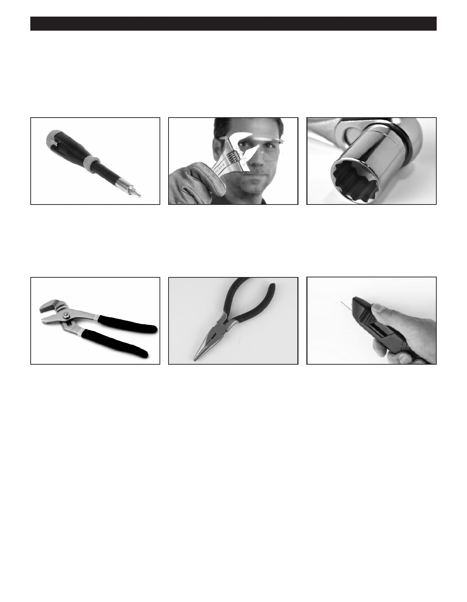

PA RT I C I PA N T R E S O U R C E G U I D E
Key Tools for Air Conditioning Repairs (30 minutes)
And now, here are the key tools you’ll need to work with air conditioning systems.
The Basic Hand Tools
Slotted and Phillips screwdrivers
An adjustable wrench has a movable A ratchet wrench has interchangeable
can help you with many air conditioning jaw that lets you fit the wrench to many sockets to fit various sizes of nuts and
repairs.
sizes of nuts and bolts.
bolts. You use it to tighten and remove
these nuts and bolts.
A tongue and groove pliers has a
A needlenose pliers has thin jaws for
A utility knife has a sharp single-edge
movable handle that lets you adjust the grabbing small things.
razor that can be use to cut a variety of
jaws for maximum gripping strength.
materials.
8